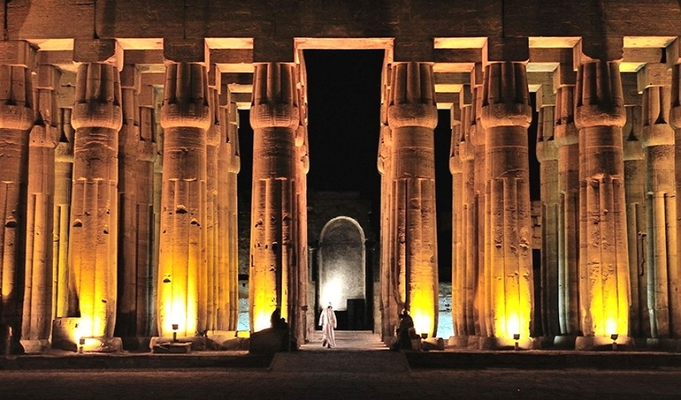
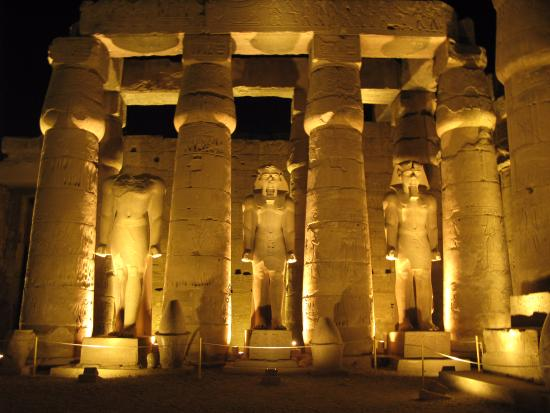

The Karnak Temple was built from 1971 BC to 1926 BC, by order of Senusret I, one of the kings of the Middle Kingdom, and expansion and construction continued until the Ptolemaic era. The Karnak Temple was built with the aim of worshiping the divine trinity of the Pharaohs Amun-Ra, his wife Mut, and son Khonsu, and a special temple was dedicated to each of them within the Karnak temple complex.
The Karnak Temple includes ten edifices, starting with the first edifice, which is the main entrance to the temple, then a courtyard that includes several statues of the Pharaonic goddess “Sekhmet”, which was depicted in the form of a woman with the head of a lioness, which is also an image of the goddess Mut, down to another courtyard of large columns, then the Hall of the Legends followed by the holy of holies. Karnak also includes an obelisk made of pure granite adorned with a metal pyramid, on which some ancient texts were inscribed telling about the greatness of the sun god Ra.
The Karnak Temple was built using limestone, and the ancient Egyptians used to fill the edifices and temples with the remains of stones, such as Horemheb, who filled the three edifices he built with the remnants of the stones of the Aten Temple, which was built by Akhenaten after it was demolished by Horemheb. Karnak is surrounded by a huge wall of mud bricks. The temple is preceded by a harbor from the west, and it is surrounded from the east, south and west by the sacred lake, which has not yet dried up for 3000 years.
The Karnak Temple is the most important and largest of the Pharaonic temples in Egypt. The temple is located west of Luxor (Thebes) in Upper Egypt. Karnak consists of a group of temples, buildings, statues and columns. The ancient Egyptians called the temple the name “Ipet Sot”, which means “the chosen spot for the thrones of Amun”, while the temple was known at first as “ Bar-Amun” , meaning the Temple of Amun or the House of Amun, as the ancient Egyptians believed that Karnak served as an ancient observatory where the god Amun communicated from with the people of the earth.
